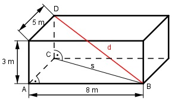

Pythagoras Aufgabe 78 Berechnen Sie die Länge der Raumdiagonalen d in cm.

Satz von Pythagoras im Dreieck ABC: s2 = AB2 + AC2 s2 = 82 cm2 + 52 cm2 = 89 cm2 |√ s = 9,4 cm Satz von Pythagoras im Dreieck CBD: d2 = s2 + CD2 d2 = 9,42 cm2 + 32 cm2 = 97,9 cm2 |√ d = 9,9 cm